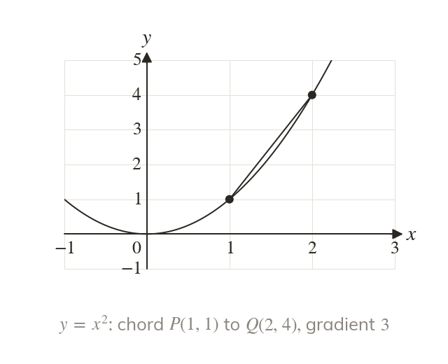
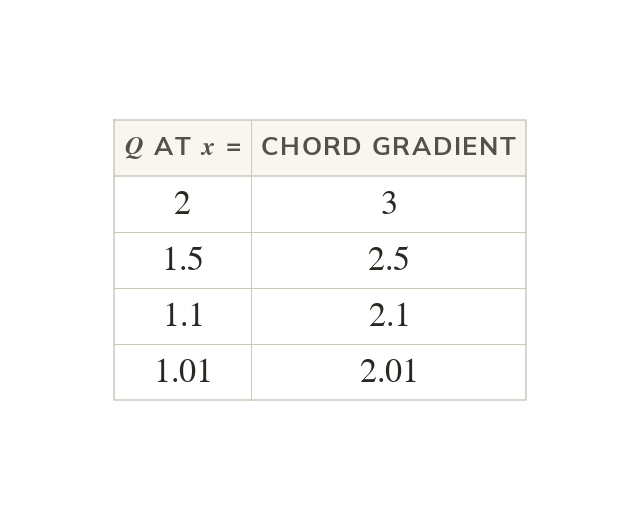
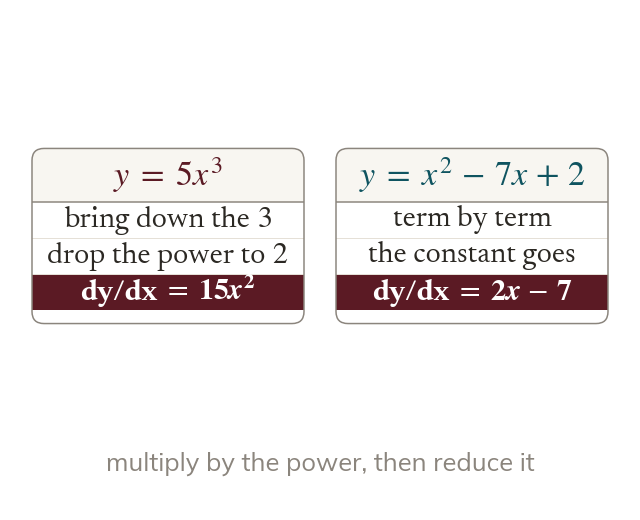
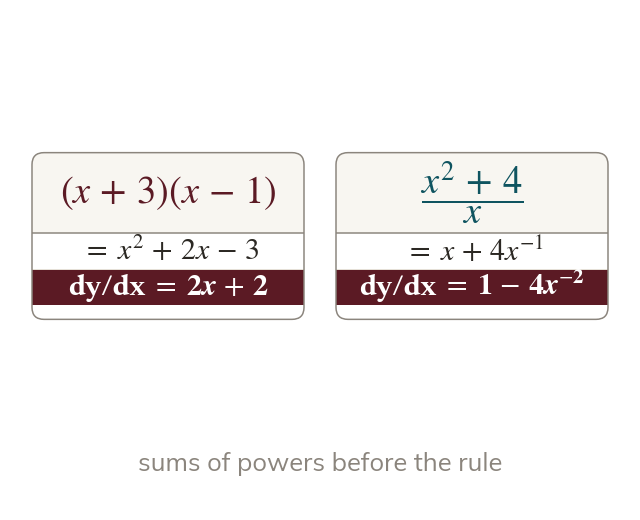

A changing gradient
A curve's gradient changes from point to point. A chord gives an average gradient between two points.
Differentiation finds the exact gradient of a curve at any point, without drawing a tangent. Every later idea in this chapter, from tangents to optimisation, is built on it.
Work down the page at your own pace. Write every answer in your book first, then click to check it.
Read each card, then follow the worked examples one step at a time.

A curve's gradient changes from point to point. A chord gives an average gradient between two points.

As Q slides towards , the chord's gradient settles. On at it settles at

Differentiating gives dy/dx
The power comes down as a multiplier, then drops by
Pick an answer. If it's wrong, the feedback tells you which mistake it was.
Section Differentiation (p209–211), Activities to (the chord method), then Exercise 8A Q1–3 (p212–216): single terms, then sums and differences.
Read each card, then follow the worked examples one step at a time.
Every term must be before the rule applies. So becomes and becomes

Brackets are expanded first. A fraction over a single term is split into separate terms.
Pick an answer. If it's wrong, the feedback tells you which mistake it was.
Exercise 8A Q4–5 (negative and fractional powers) and Exercise 8B (brackets to expand and fractions to split first), p212–216
Finished? Next lesson: 8.4a Tangents to a Curve.
Log in, then search for a code to practise that skill.